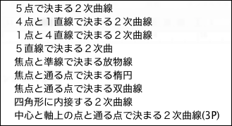
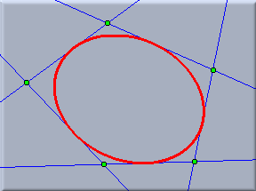
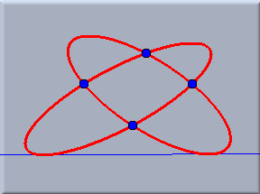
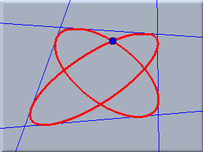
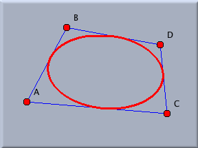
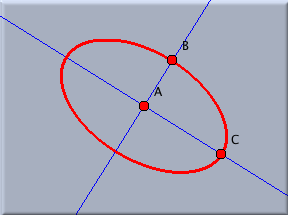

２次曲線の扱い
２次曲線の描画に関して４つのボタンがあります。
 | ５点で決まる２次曲線 |
 | 焦点と通る点で決まる楕円 |
 | 焦点と準線で決まる放物線 |
 | 焦点と通る点で決まる双曲線 |
この４つの方法の他に、メニューから選べるいくつかの方法が用意されています。この節では、これらのモードについて簡単に説明します。これらはすべて、すでに描かれている要素を用いて定義されるものです。２次曲線のメニューは次のようになっています。
 |
| ２次曲線のメニュー |
５直線で決まる２次曲線
５つの点を通る２次曲線がひとつ定まるので、５本の接線で決まる２次曲線も定義できます。このメニューを選ぶ前か、選んだあとで５本の直線を指定すれば２次曲線が描けます。
４点と１直線で決まる２次曲線
４点を通り１つの直線に接する２次曲線は２つあります。このモードで描画できます。
４直線と１点で決まる２次曲線
４つの直線に接し、１つの点を通る２次曲線は２つあります。このモードで描画できます。
次の図は、これら３つの例を示します。
 |  |  | ||
| ５本の直線 | ４点と１直線 | １点と４直線 |
四角形に内接する２次曲線
このモードは透視図を描くときにとても便利です。四角形に内接する２次曲線を描きますが、最終的には正方形に内接する円の透視図となるように描画されます。そのため、４点を選ぶときは円を描くような順序でクリックする必要があります。
中心と主軸上の点と通る点で決まる２次曲線
２次曲線は、主軸と通る点によって特徴づけされることがよくあります。このモードは、中心と、主軸上の２つの通る点(長軸と短軸を決定する点)で決まる楕円を描きます。
次の図は、上記の例を示します。
 |  |
|
| 内接する２次曲線 | 長軸と短軸で決まる楕円 |
こちらも参照してください
Page last modified on Friday 24 of February, 2012 [23:37:52 UTC].
The original document is available at
http://doc.cinderella.de/tiki-index.php?page=Conic%20OperationsJ